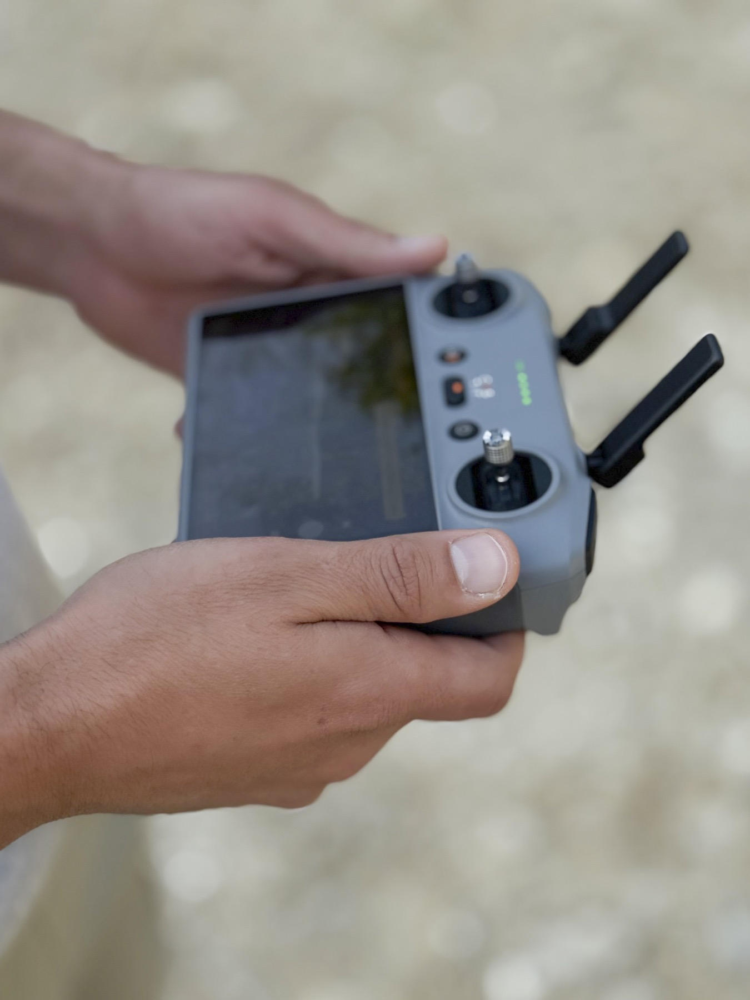

Volare in pratica
Sai come è fatto un drone, come parla con il radiocomando e che cosa dice la norma. Resta il gesto: scegliere posto e momento, controllare la macchina, riconoscere un guaio mentre succede e tornare a casa senza sorprese.
- Prima di uscire di casa
- Sul campo, prima del decollo
- In volo
- Dopo il volo
- Quando qualcosa va storto
- Buone maniere
- In sintesi
Riferimenti normativi rivisti il 20 settembre 2026 sulle fonti del capitolo 5. Le procedure operative non discendono da un atto: confrontale con il manuale del tuo drone.
7.1 Prima di uscire di casa
Il volo si prepara prima di prendere la macchina, in dieci minuti.
Dove
Il punto di partenza è la mappa delle zone geografiche, in Italia sul portale d‑flight: area libera, area con limitazioni o area vietata. Le limitazioni tipiche sono un tetto di quota sotto i 120 m generali o l'obbligo di autorizzazione o preavviso. Il capitolo 5 spiega i tipi di zona e come chiedere accesso.
Due accortezze che il portale non ricorda: controlla tutta l'area che intendi coprire, non solo il decollo, e controlla giorno e ora, perché alcune zone sono attive solo in certi periodi.

Quando
Il vento è il primo filtro. Guarda vento medio e raffiche, confrontali con il limite dichiarato nel manuale e riducilo per la tua esperienza e per il sito. La velocità massima del drone non è un criterio diretto: spesso si riferisce a una modalità diversa da quella in uso. Decide la tratta di ritorno, perché rientri controvento con potenza da spendere, e in quota il vento è quasi sempre più forte che a terra.
Poi l'acqua. Quasi nessun multirotore di consumo è sigillato: pioggia, nebbia fitta ed erba bagnata mettono umidità dove non serve. La temperatura agisce sulle batterie: sotto i 10 °C circa le celle al litio perdono capacità e la percentuale residua diventa ottimistica. Tienile al caldo fino al decollo.
Restano due voci meno ovvie. La visibilità, perché con la foschia il drone sparisce molto prima del limite di distanza che avevi in mente. E l'attività geomagnetica: una tempesta solare può degradare il posizionamento satellitare e disturbare il magnetometro. L'indice Kp che molte applicazioni mostrano è planetario e non misura la qualità del segnale sul tuo sito: è un'avvertenza, non una soglia. Contano gli avvisi di navigazione, il punto home corretto e le condizioni del sito.
Volare di notte
In categoria Open il volo notturno è permesso. Devi assicurarti che sia attiva una luce verde lampeggiante, anche se il drone non appartiene a C1, C2 o C3: per quelle classi è un requisito di prodotto, ma l'obbligo di tenerla attiva è del pilota e vale per ogni operazione notturna in Open (regolamento 2019/947, UAS.OPEN.060(2)(g)). Verifica che una luce aggiunta sia compatibile con massa e configurazione ammessa dal fabbricante.
La luce risolve il problema di chi guarda da terra, non il tuo: dice dove si trova il drone, non a che distanza è né dove punta, e non mostra i cavi. Per i primi voli notturni conviene un sopralluogo diurno.
Che cosa portare
Tre documenti: la prova di registrazione come operatore, l'attestato A1/A3 con l'eventuale certificato A2, il certificato della polizza. Tienili sul telefono e su carta, perché i posti buoni per volare sono spesso senza campo. Il capitolo 5 dice che cosa serve.

7.2 Sul campo, prima del decollo
Il punto di decollo vuole una superficie piana e compatta: evita ghiaia fine, sabbia e polvere, che i motori aspirano, e l'erba alta, che impiglia le eliche. Sta' a distanza da persone e animali e guarda le linee elettriche: i cavi sottili sono quasi invisibili in volo.
Il magnetometro merita un pensiero in più. Ringhiere, tombini, armature del cemento e il cofano dell'auto deviano il campo magnetico locale: una bussola calibrata lì è calibrata male. Lo stesso vale per il punto home: registrato fra il metallo o sotto una parete che scherma metà del cielo, manda l'RTH su coordinate imprecise.
Se hai un osservatore, accordatevi prima: il suo compito non è lo schermo ma il cielo e le persone, mentre tu guardi il drone. Bastano tre frasi convenute: «aereo a sinistra», «gente in arrivo», «rientra subito».
Checklist pre-volo
Le prove di funzionamento dei motori si fanno al banco, senza eliche, secondo la procedura del costruttore. Con le eliche montate non si muove il gas per sentire se rispondono: i controlli qui sotto si eseguono a motori disarmati.
- Batterie del drone e del radiocomando cariche, integre, a temperatura ambiente.
- Eliche integre, montate nella posizione giusta e serrate.
- Blocco meccanico del gimbal rimosso e copriobiettivo tolto, se presenti.
- Scheda di memoria inserita con spazio libero, se registri a bordo.
- Firmware e database delle zone aggiornati.
- Bussola calibrata se il sistema lo richiede, lontano da masse metalliche.
- Posizionamento satellitare stabile e nessun avviso di navigazione, prima di armare i motori.
- Punto home registrato e verificato sulla mappa, non dato per acquisito.
- Quota di rientro dell'RTH compatibile insieme con gli ostacoli e con i limiti di altezza lungo il percorso; se nessuna quota li soddisfa tutti, cambia punto di decollo, area o configurazione.
- Azione prevista alla perdita del comando radio letta nelle impostazioni, non supposta: può essere rientro, atterraggio, mantenimento della posizione o altro.
- Escursione degli stick e comandi del gimbal verificati a terra, a motori disarmati.
- Collegamento radio e video stabili, senza avvisi di interferenza.
- Livello di batteria a cui rientrare deciso adesso, non in volo.
- Se voli di notte: luce verde lampeggiante attiva, qualunque sia la classe del drone.
- Nessun intervento di emergenza in corso: vicino o dentro un'area di intervento non si vola senza il permesso dei servizi responsabili.
- Area di decollo sgombra. Avvisare i presenti è educazione, ma non li rende persone coinvolte: le distanze della tua sottocategoria restano quelle.

7.3 In volo
Il volo a vista, in sigla VLOS, riguarda i tuoi occhi, non la camera: guardare lo schermo non è tenere il drone a vista, e un aeromobile piccolo diventa un puntino grigio ben prima dei limiti di distanza che immagini. Resta entro la distanza alla quale riconosci l'orientamento: se non capisci dove ha il muso non correggi nulla.
La batteria si gestisce decidendo prima, e nessuna percentuale vale per ogni volo. Parti dall'autonomia dichiarata nel manuale, riducila per esperienza e condizioni, valuta la tratta di ritorno e le aree dove atterrare per via breve, e fissa a terra il livello a cui rientri, con una riserva. Il ritorno controvento può consumare il doppio dell'andata: un volo lontano sottovento può richiedere di rientrare molto prima di qualunque soglia avessi in mente. La stima del tempo residuo segue il consumo corrente e non sa del viaggio di ritorno.
La precedenza agli aeromobili con equipaggio non ammette valutazioni. Se senti un motore o vedi un velivolo basso, scendi e atterra: elicotteri di soccorso, mezzi antincendio e aerei agricoli lavorano a quote basse e coprono in pochi secondi la distanza da cui li senti. Cedere il passo però non basta: dove è in corso un intervento di emergenza non si vola, vicino o dentro l'area, senza il permesso dei servizi responsabili. Stessa attenzione ai rapaci in nidificazione e agli altri droni, che non hanno modo di vederti.
Quando qualcosa smette di funzionare
La perdita del collegamento di comando è un evento che il sistema è progettato per gestire, purché tu sappia in anticipo come lo gestisce. L'RTH non è garantito: il failsafe può comandare rientro, atterraggio sul posto, mantenimento della posizione, disarmo o altro, secondo firmware, configurazione, sensori, stato della batteria e modalità. Per questo la verifica sta nella checklist. L'errore tipico è intervenire a caso: spegnere il radiocomando, cambiare canale, allontanarsi dal decollo.
- Non spegnere nulla. Lascia acceso il radiocomando e fermo il selettore di modalità: il collegamento può ristabilirsi da solo.
- Orienta le antenne. Segui il diagramma e le istruzioni del radiocomando: una patch e uno stilo non si orientano allo stesso modo, e puntare la punta di uno stilo verso il drone è spesso la direzione peggiore. Tienile alte e libere.
- Resta dove sei. Se l'azione prevista è il rientro, il drone torna sulle coordinate registrate al decollo, non su di te: se ti sposti, atterra dove non sei.
- Guarda il cielo, non lo schermo. Segui il drone a occhio, applica la procedura del manuale e tieni sgombra l'area di atterraggio.
- Quando riprendi il controllo, valuta. A comandi di nuovo responsivi decidi se lasciar completare il rientro o atterrare a mano: scegli l'opzione più sicura in quel momento, non per riflesso.
Gli altri guasti hanno logiche diverse. Se il drone perde il posizionamento satellitare GNSS può perdere il mantenimento della posizione o cambiare modalità: quanto degrada dipende dagli altri sensori disponibili, dalla qualità delle loro stime e dalla logica del firmware. Il punto home non viene necessariamente cancellato: può diventare indisponibile la navigazione per raggiungerlo. Conosci il comportamento del tuo modello; in genere piloti a mano, contrasti la deriva e atterri appena hai un punto libero. Un errore di bussola dà rotazione lenta non comandata o traiettoria curva: allontanati dal metallo, atterra e ricalibra a terra, mai in volo.
La batteria critica avvia un atterraggio automatico dove il drone si trova, e non guarda se sotto c'è un lago o una strada. Il flyaway, la partenza incontrollata in una direzione qualsiasi, è raro: tenta l'RTH e, se non risponde, annota ultima posizione e quota note, che servono per cercarlo e per ricostruire l'accaduto.
| Sintomo | Causa probabile | Azione immediata |
|---|---|---|
| Video a scatti, comandi ancora validi | Interferenza o ostacolo sulla linea di vista radio | Mantieni il VLOS, orienta le antenne, riduci la distanza; sali di quota solo se sicuro e consentito |
| Comandi senza risposta, drone visibile | Perdita del collegamento di comando | Radiocomando acceso, resta sul punto di decollo, applica la procedura del manuale |
| Deriva laterale costante, nessun blocco di posizione | Perdita o degrado del posizionamento satellitare | Pilota a mano contro vento e atterra appena possibile |
| Rotazione lenta non comandata o traiettoria curva | Errore di bussola per disturbo magnetico | Allontanati dal metallo, atterra e ricalibra a terra |
| Discesa automatica che non riesci a fermare | Batteria al livello critico | Guida la discesa verso l'area libera più vicina |
| Allontanamento in direzione non comandata | Avaria del sistema di navigazione | Tenta l'RTH, annota ultima posizione e quota |
7.4 Dopo il volo
Lo spegnimento ha un ordine: prima il drone, poi il radiocomando. Spegnere il radiocomando con il drone acceso gli fa credere di aver perso il collegamento e rischia di far partire l'RTH da terra.
- Drone spento per primo, radiocomando per secondo.
- Eliche controllate contro luce: incrinature e bordi scheggiati.
- Motori girati a mano: nessun attrito, gioco o rumore secco.
- Batterie lasciate raffreddare prima della borsa o del caricatore.
- Corpo e sensori puliti da polvere, terra o salsedine.
- File copiati su disco prima di svuotare la scheda di memoria.
- Volo annotato sul registro con le anomalie viste.
Il registro dei voli non è obbligatorio in Open: è un consiglio, e per i primi mesi conviene seguirlo. Annota data, luogo, durata, batterie usate e anomalie. Dopo un anno ti dice quante cariche ha una batteria e se un comportamento strano si era già visto; ed è la ricostruzione che hai se qualcuno ti chiede conto di un volo.
La manutenzione è breve. Le eliche sono materiale di consumo e si sostituiscono senza rimpianti, le viti del telaio si allentano con le vibrazioni, e nei cuscinetti ruvidezza o gioco assiale sono un preavviso. Del gimbal controlla fine corsa e cavi flessibili, delle antenne gli attacchi. Gli aggiornamenti si fanno a casa.
Le batterie fra un volo e l'altro
Le celle al litio invecchiano più in fretta a carica piena. Per un periodo di inattività portale alla tensione di conservazione indicata dal costruttore, con la funzione di scarica programmata che molti caricatori hanno. In una LiPo convenzionale da 4,2 V per cella quel valore si aggira sui 3,8 V, ma è un esempio: esistono celle LiHV con tensione massima diversa, la tensione sotto carico non coincide con quella a riposo e una soglia generica non garantisce autonomia di rientro. Carica, conservazione e soglie seguono il manuale del pacco. Controlla che l'involucro resti piatto: un rigonfiamento, anche lieve, dice che il pacco è a fine vita.
Portare le batterie in aereo
Distingui due casi. Le batterie di ricambio viaggiano nel bagaglio a mano con i terminali protetti da nastro o dalla custodia, e non sono ammesse in stiva; le batterie installate nel drone seguono condizioni proprie. Il criterio non è la capacità in ampere-ora ma l'energia in wattora, tensione nominale per capacità. Portare i pacchi a carica ridotta è una raccomandazione o un requisito del vettore, non un obbligo generale: verifica le condizioni della tua compagnia.
| Energia del pacco | Ricambi in bagaglio a mano |
|---|---|
| Fino a 100 Wh | Ammessi con terminali protetti; di norma al massimo 20 per persona, oltre i quali serve l'approvazione del vettore |
| Da 100 a 160 Wh | Al massimo due pacchi, con approvazione preventiva del vettore |
| Oltre 160 Wh | Vietati nel trasporto passeggeri |
7.5 Quando qualcosa va storto
Un incidente con feriti, un danno a terzi e una mancata collisione con un aeromobile con equipaggio non sono la stessa cosa, ma condividono i primi minuti. Presta soccorso o chiama i soccorsi prima di tutto, poi metti in sicurezza l'area e togli alimentazione al drone se puoi farlo senza rischio. Non smontare, non riparare, non cancellare file: il drone com'è rimasto, i log di volo e qualche fotografia valgono più di una ricostruzione a memoria. Annota subito ora, luogo, meteo e presenti.
Esistono poi due obblighi di segnalazione, distinti fra loro. Il Regolamento (UE) 376/2014 istituisce il sistema europeo di segnalazione degli eventi nell'aviazione civile: gli eventi si riportano per imparare dagli errori, non per punire chi li commette.
- ENAC: segnalazione secondo il regime applicabile, dal portale ECCAIRS 2 accessibile anche ai privati, entro 72 ore dalla conoscenza dell'evento.
- ANSV: comunicazione immediata e comunque entro 60 minuti dalla conoscenza dell'evento, quando ricorre un incidente o un inconveniente grave. Un inconveniente grave può non avere né feriti né danni.
Gli eventi più comuni per un pilota Open sono un ferito, una collisione o quasi collisione con un aeromobile con equipaggio, una perdita di controllo che ha portato il drone fuori dall'area prevista con pericolo per terzi. L'elenco dà un'idea, non esaurisce i casi da segnalare: riferimenti e definizioni sono nel capitolo 5.
Può capitare che qualcuno ti fermi: una pattuglia, un custode, un cittadino infastidito. Con le forze dell'ordine atterra, tieni le mani lontane dagli stick, mostra i documenti e di' che cosa stai facendo. Con i cittadini serve la stessa calma: spiega che cosa riprendi, mostra che non inquadri loro e, se la richiesta è ragionevole, spostati.
7.6 Buone maniere
Le regole dicono che cosa puoi fare, non che cosa conviene fare. Sulla privacy il criterio è il comportamento, non la quota: non insistere su persone riconoscibili, non stazionare sopra giardini e terrazzi, non usare lo zoom per guardare dentro le finestre. In un luogo frequentato fai passaggi brevi.
Il rumore è una delle ragioni più frequenti di lamentela: un multirotore fermo a venti metri è fastidioso molto più a lungo di quanto tu creda: tu sei concentrato sul volo, chi sta sotto no. Vale lo stesso per gli animali, e in nidificazione il disturbo alla fauna selvatica è un danno vero. Nelle aree protette parti dal presupposto che il volo sia vietato e verifica: tutela della fauna, accesso al terreno, privacy e pubblica sicurezza sono vincoli distinti dalle restrizioni aeronautiche, ciascuno con la sua autorità, e una mappa senza zone UAS non li risolve.
Infine un consiglio di convivenza: se qualcuno ti chiede di smettere, conviene dargli ascolto. Non è un obbligo giuridico, e non significa mollare gli stick a metà manovra: porta il drone a terra in sicurezza, poi parla. Hai quasi sempre un altro posto e un altro momento.
In sintesi
- Il volo si pianifica a casa: scheda della zona su d-flight, vento e raffiche confrontati con i limiti del manuale, temperatura, visibilità, meteo spaziale. Nessuno di questi valori è un semaforo automatico.
- Per volare di notte in Open serve una luce verde lampeggiante attiva, qualunque sia la classe del drone.
- La checklist pre-volo esiste per essere letta: eliche, batterie, posizionamento, punto home, quota di rientro compatibile con ostacoli e limiti di altezza, azione prevista alla perdita del comando.
- Il volo a vista è con i tuoi occhi, non con la camera; il livello di rientro si fissa a terra partendo dal manuale e si riduce per distanza, vento e aree alternative.
- Alla perdita del collegamento non spegnere il radiocomando, resta sul punto di decollo e applica la procedura del manuale: l'RTH non è garantito, e a controllo riacquistato scegli se completarlo o atterrare a mano.
- Le batterie di ricambio viaggiano in cabina con i terminali protetti. Un evento si mette in sicurezza, si documenta e si segnala all'ENAC entro 72 ore; incidente o inconveniente grave vanno comunicati all'ANSV entro 60 minuti.